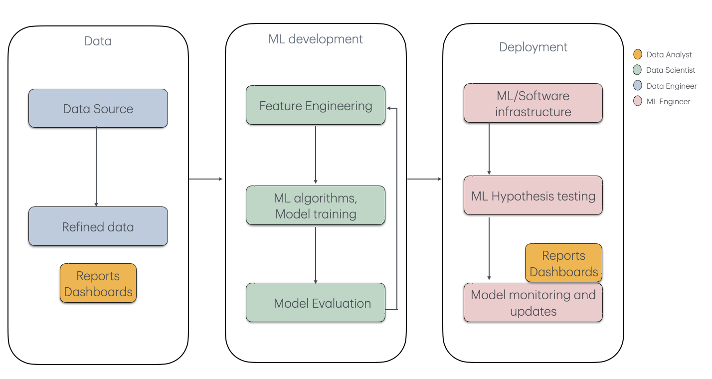
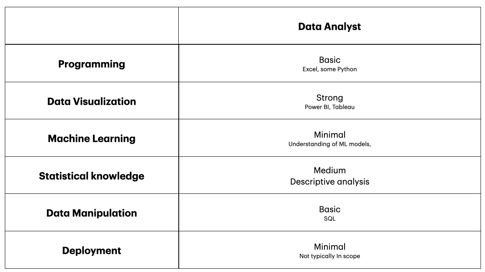
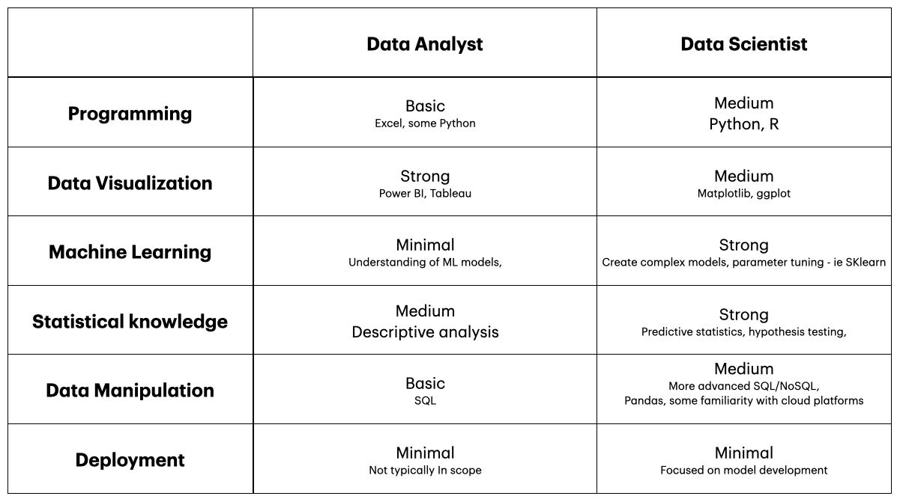
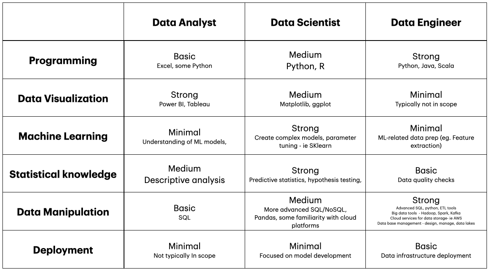
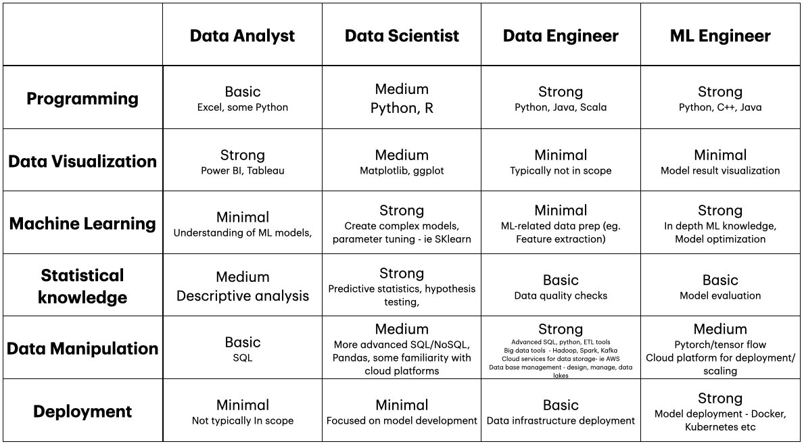
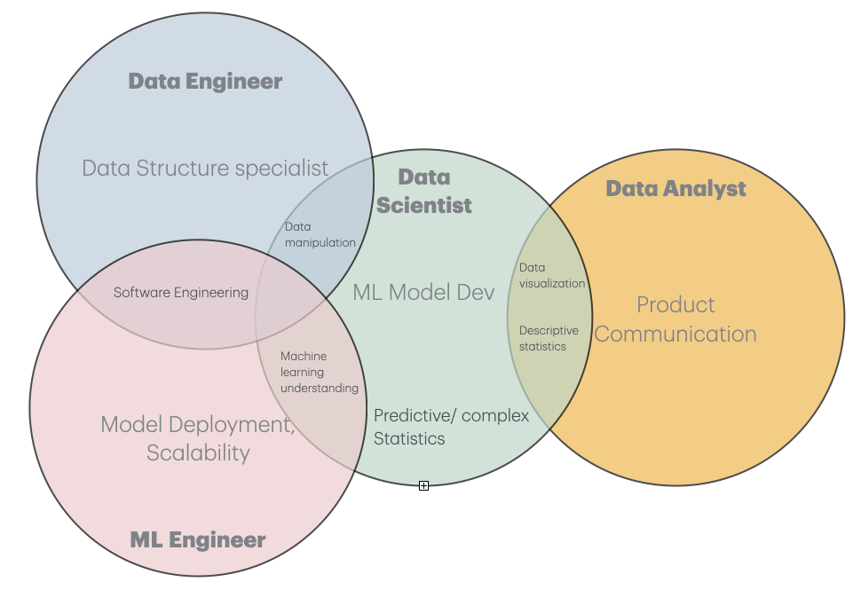

So what are all these Data science jobs about anyways?
An introductory guide to the careers available in the world of data science
Data science is a field catching a lot of attention in the media these days. With the advent of chatGPT and other LLMs, it seems like every company is lining up to claim how they’ve “integrated AI” into their product. And for the most part, this attention is well warranted; as a relatively new field, data science is growing at an impressive speed, and has applicability in nearly every work sector. So as with any emerging field, a lot of buzzwords have come out in the last few years, and with them, so have a lot of new sections of the field of data science, and their attached jobs.
It’s with a bit of embarrassment that I admit that halfway through a Master’s degree in Data science, it occurred to me I still didn’t have a good grasp on what jobs are available out there in the real world. I had heard a lot of terms floating around - Analyst versus data scientist versus machine learning engineer - but I didn’t have a good grasp on how each related to the concepts I had learnt since beginning my journey in the field.
Following this mini existential-crisis, I went on a deep dive, and compiled below a summary on some of the most talked about job titles heard in the field - what exactly each does, where do they fit in the data science world, and what specific skills are sought after for these positions.
So maybe you’ve only recently heard of data science. Maybe you are soon to be graduating from a data science program, and are looking at where to apply hard earned skills! Or maybe you are considering a career pivot, and want to learn more about the opportunities available before you look for a bootcamp or program to teach you the necessary skills. Whatever the reason, I hope this guide helps you - as it helped me - to discover what potential jobs data science has to offer!
What exactly is Data Science
Before we launch into the nitty gritty details of different job titles, it’s worth getting a high overview of what is data science. In general terms, data science is the process of using large amounts of data to extract meaningful insights. It combines computer science with mathematics and statistics to build models to derive these conclusions. The applications of the field are far ranging. While tech is the first industry that often comes to mind, data science has many applications in fields like:
- Healthcare
- Finance
- Education
- Entertainment
- Government
There are many MANY aspects and sub category to data science, but a gross simplification of a typical data science workflow can be seen as follows:
- Data Production : Where raw data is procured, cleaned, and stored in a way that is useable
- Machine Learning analysis: where ML models are created, and tuned for a specific application
- Deployment: where the model is scaled up for final stakeholder use
The diagram below ( which i adapted from this article ) gives a visualization of these steps. Lets now explore how some jobs relate to this general workflow!

1: The Data Analyst
First up is the data analyst. The main role of a data analyst is to interpret historical data in order to inform business decisions. This position will generally tend to work with cleaner, well organized data, and apply basic statistical concepts to derive meaningful results. There are a few factors that separate a data analyst from other roles:
- An analyst will be expected to communicate results to a broad audience. Above other roles, there is a large emphasis on the ability to effectively communicate results through effective visual tools and reporting.
- While Data analysts are expected to do some data wrangling and statistical inference, they typically are not generating complex machine learning models
- This role would be considered a good entry point into the data science world, as it does not require as specialized an education or list of skills
Example task for data analyst:
Working for a credit card firm, a data analyst may go through historical transaction data from credit card customers to uncover trends in spending behaviors, which could then be acted on from the company side. These might include:
- most common spending categories
- peak spending times
- regions where customers tend to spend the most money
Key Skills:
A data analyst will typically come from some sort of technical background. Generally a bachelor’s degree in a field such as mathematics or statistics.. Presented in the table below are key skills for the role:

2: The data Scientist
Next is the data scientist. The main role of a data scientist is to use advanced statistical methods to build machine learning models that predict future outcomes or recommend actions. There are a few things that set data scientist apart from their analyst counterparts:
- While analysts typically analyze trends from past data, data scientists place more emphasis on prediction, and prescriptive analytics
- They may tend to work with more unstructured data
- The position will require knowledge of advanced machine learning topics, and capacity to implement these via more developed programming skills
Example task for data scientist
A data scientist in a healthcare setting might develop a predictive model that forecasts the likelihood of a patient being readmitted to a hospital within 30 days after discharge. The model would use a variety of structured (medical history, demographics) and unstructured data (doctor notes, lab reports) and employ machine learning algorithms to make predictions.
Key Skills:
Data scientist roles will typically require a deeper education in the field of data science compared to analysts. This may include a masters in the field of data science or other related field. A summary of key skills for a data scientist is in the table below

3: The data Engineer
A data engineer works at the backbone of the data science workflow. He is responsible for creating data infrastructures and pipelines, making data ready for analysis by data scientists or analysts. He differs from the previous roles in the following ways:
- While previous roles do some data wrangling, Data engineers will need a much stronger foundation around creating databases and manipulation of data.
- They will generally need a stronger foundation on traditional software engineering and backend development
- The primary stakeholders for data engineers tend to be more internal (producing data for analysts rather than a product for a customer). As such, data engineering positions will require less visualization compared to the previous roles.
Example task for data scientist
In a manufacturing company, a data engineer might be responsible for building a real-time data pipeline to collect and process data from sensors embedded in machines on the factory floor. These sensors might measure temperature, humidity, machine performance, or energy usage. The data engineer designs a system that ingests and cleans this sensor data, stores it in a database, and ensures it’s readily available for analysis by data scientists.
Key Skills
Here are some key skills for a data engineer

4: The Machine Learning Engineer
Lastly, the Machine learning engineer is someone who generally works towards the tail end of the data science workflow. ML engineers will typically closely alongside data scientists, and will take a completed model and work on bringing it up to deployment. They will typically be in charge of creating the platform that will host the final machine learning model, as well as be in charge of maintenance and update of the model. Here are some more details on how they relate to the other roles mentioned:
- Like data engineers, ML engineers typically have a stronger base in programming and software engineering.
- Like data scientists, ML engineers need a strong foundation in machine learning models. However instead of implementing models they usually deal with scaling up the final solution
- More so than other ML engineers deal with maintenance of deployed models, ensuring the outputs are still valid and accurate.
Example task for a Machine learning engineer
Working for a power company, a Machine Learning Engineer could take a predictive maintenance model developed by a data scientist that forecasts when equipment like turbines or generators in a power plant will likely fail. The ML engineer deploys this model into a production environment, ensuring it can run on new data in real time. They build an API for easy integration with existing plant monitoring systems and optimize the model for performance and scalability.
Key Skills
Here’s a final comparison of the skills for each role!

Final Recap
So there you have it! A brief overview of some of the more prominent careers in data science. Here’s a quick recap of the specific roles of each:
- Data Engineer: Specializes at creating appropriate ata structures and data pipelines
- Data Analyst: Focuses on analyzing trends from historical data with purpose of deriving and communicating insights to stakeholders
- Data Scientist: Uses in depth Machine learning and statistical knowledge to create predictive models
- Machine learning engineer: Focuses on deployment of models and maintenance, ensuring proper function of system

It’s important to note that there are many, MANY more positions than these 4. As well, within each position I mentioned, there are ways to further specialize on a particular topic. Lastly, many firms won’t have a clear delineation between each role, and you might find yourself wearing many hats in your future career. But hopefully this guide served as a good way to dip your toes and see what’s out there!
Resources
Wiki: https://en.wikipedia.org/wiki/Data_science
Blog guidelines: https://towardsdatascience.com/questions-96667b06af5#1d11 Past example: https://towardsdatascience.com/exploring-the-most-popular-machine-learning-and-deep-learning-github-repositories-90b9ecf12be7
Data scientist coursera: https://www.coursera.org/articles/what-is-a-data-scientist
Dat analyst vs scientist: https://www.geeksforgeeks.org/difference-between-a-data-analyst-and-a-data-scientist/
Data engineer vs data scientist :https://www.datacamp.com/blog/data-scientist-vs-data-engineer Data engineer: https://www.datacamp.com/blog/what-does-data-engineer-do
Machine learning engineer role: https://brainstation.io/career-guides/what-is-a-machine-learning-engineer